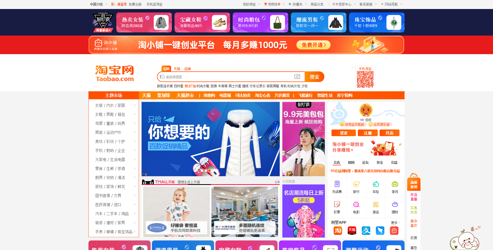
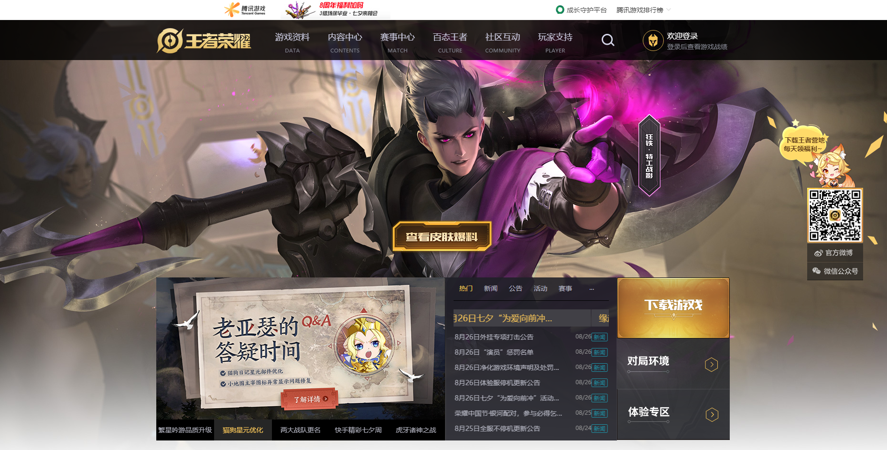
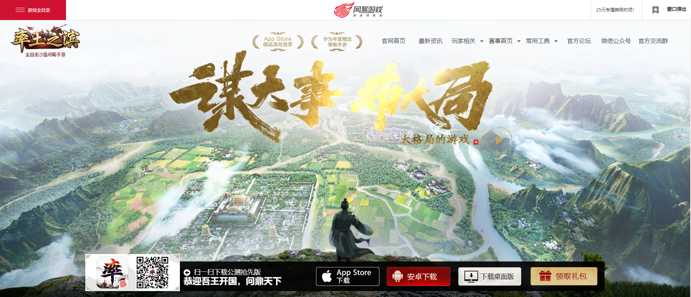
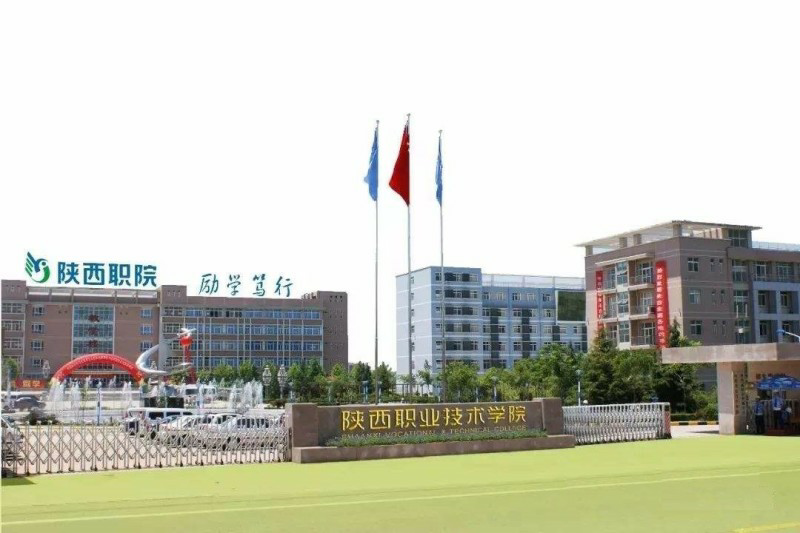
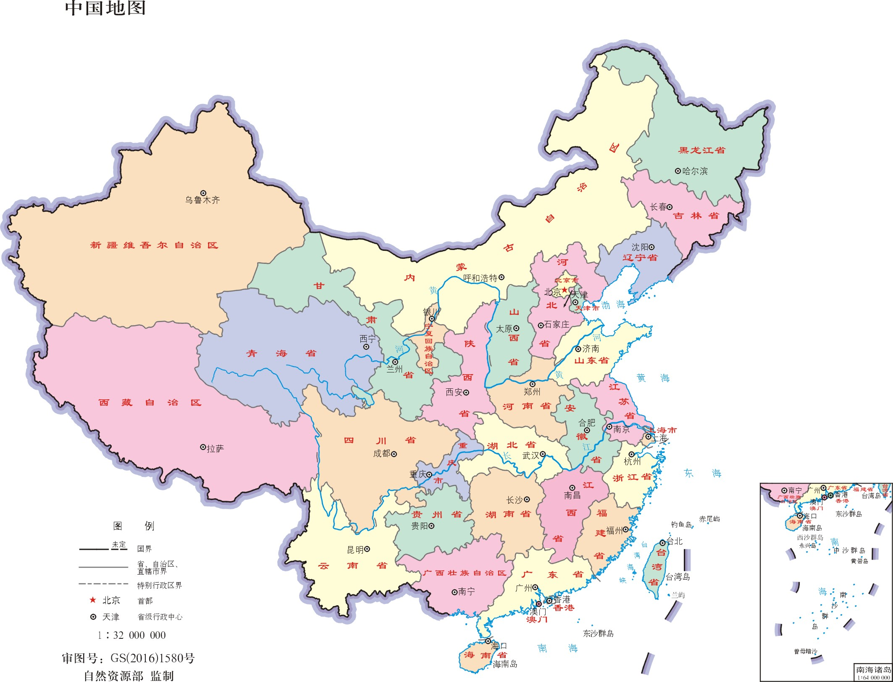

阿里巴巴集团控股有限公司（简称：阿里巴巴）是中国一家提供电子商务在线交易平台的公司，是全球最大零售商之一，由马云为首的18人于1999年在杭州创立。 该公司经营范围包括B2B贸易、网上零售、第三方支付和云计算服务等，业务包括淘宝网、天猫、阿里云等，并在美国纽约和中国香港交易所上市。
我2010年10月10日加入阿里巴巴，参与过淘宝网页的布局，维护与开发。
腾讯是一家以互联网为基础的平台公司，通过技术丰富互联网用户的生活，助力企业数字化升级。我们的使命是“用户为本 科技向善”。
我2012年12月12日加入腾讯，参与过王者荣耀官方网站主界面的布局，维护与开发。
网易公司（NetEase）是中国的一家知名互联网技术企业，由丁磊于1997年6月创建，总部位于广州，在美国纳斯达克、中国香港[1]两次上市。它推出了门户网站、在线游戏、电子邮箱、在线教育、电子商务、在线音乐、网易bobo等多种服务，曾入选中国互联网企业100强、全球250大最值得信赖企业榜等。
我2014年1月1日加入网易，参与过率土之滨官方网站主界面的布局，维护与开发。
没有人喜欢工作，工作的目的只不过是为了那点微薄的薪水，为了使全家上下老小享受更好的生活。所以，别问我你为什么来我们公司上班？还不是为了你们那点工资。也别问我可不可以义务加班？那我想问你你上班可以不要工资吗？
树不修，长不直；人不学，没知识。
没有为什么，就是单纯的喜欢。
海内存知己,天涯若比邻。
世界上没有陌生人，只有还没认识的朋友
世界上最遥远的距离，就是我们站在彼此的面前，却只能装作互不相识！
人生自古谁无死，能吃就吃赶紧吃。
人生能有几多愁，恰似一锅排骨汤流阿流。
唯有爱与美食不可辜负！
腹中书万卷，身外酒千杯。
功名万里外，心事一杯中。
喝一杯小酒，我们谈一谈人生！
正当的游玩，是辛苦的慰安，是工作的预备。
适度的娱乐能放松人的情绪，陶冶人的情操。
当你无比烦躁，感觉自己的人生已经没什么意义的时候，那就出去走走吧，或许你会遇到更好的...
陕西职业技术学院，是一所全日制公办普通高等学校[1] ，其前身是陕西省“九五”重点建设项目陕西省职业教育中心，成立于1995年10月20日。2001年，经省政府批准在省职教中心基础上成立了陕西职业技术学院。学院是陕西省教育厅直属的全日制公办普通高等学校。学院被教育部、财政部确定为“国家示范性高等职业院校建设计划”骨干高职院校立项建设单位，是教育部高职高专院校人才培养工作水平优秀院校，陕西省示范性高等职业院校建设单位。陕西职业技术学院是一所全日制公办普通高等学校。根据省政府批准，西安外贸职工大学（陕西省对外贸易学院）于2016年12月并入学院。
学院位于古城西安，有长安、白鹿原两个校区，白鹿原校区位于灞河之滨的白鹿塬上，长安校区位于潏河之滨的少陵塬畔，历史积淀丰厚，环境优美、风光秀丽。两个校区占地面积977.05亩，建筑面积34.2万平方米。现有在校生11000余名，专兼职教师700余名[1]。 2019年12月，被教育部、财政部列入第三类高水平专业群建设单位（B档）。
陕西（简称“陕”或“秦”），中华人民共和国省级行政区，省会是西安，是中华民族及华夏文化的重要发祥地之一，有西周、秦、汉、唐等14个政权在陕西建都。
陕西省位于中国西北部，纵跨黄河、长江两大流域，东隔与山西省相望，北与内蒙古自治区相毗连；属北暖温带、亚热带季风性气候，著名景点有长城、秦始皇兵马俑、大雁塔等。宋初设陕西路；元至元二十三年（1286年）设陕西行省；1950年1月10日，陕西省人民政府成立。
{kind=link}